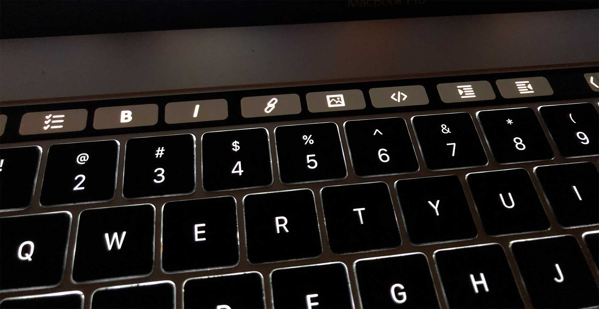
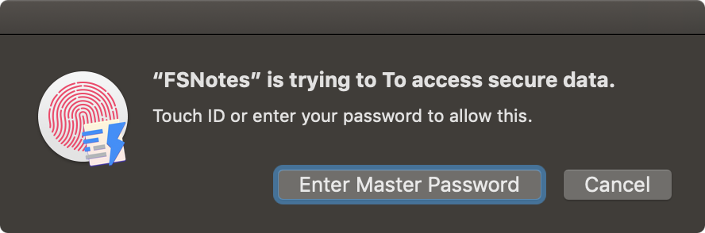
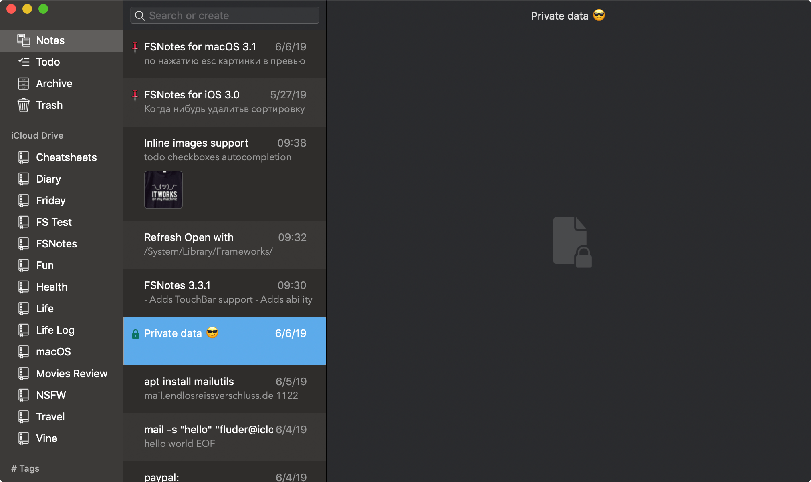

File system notes is modern notes manager on steroids for macOS and iOS.
Application respects open formats: plain/text, markdown, rtf, and stores data in file system. You can view, edit, copy data in favourite external editor and see live results in FSNotes.
Pricing
FSNotes is an open source project, and is provided for free, but you can support development by buying application in Mac App Store for symbolic price or becoming a patron .
No subscriptions ever.
Or install using Homebrew:
brew cask install fsnotes
Use it on iPhone and MacBook
Use like a Pro
Type with TouchBar

Type faster with virtual buttons on your TouchBar
Encrypt with Fingerprint protected password

Encrypt and decrypt important data with one touch
Dark Mode

Balanced and well polished dark theme
Git versioning and scheduled backups
And many more:
Keyboard centric.
Global shortcuts (clipboard save/search).
Markdown and RTF markup (files stored on disk as Plaintext and Rich Text).
Markdown preview mode.
Elastic two-pane view (vertical and horizontal layout).
Blazing fast and lightweight (working fine with 10k+ files)
Open files in finder work with external editors (changes seamless live sync with UI).
Pin/Unpin important notes on the top.
Synchronization over iCloud Drive.
Multi-folder storage.
Live Markdown highlighting with code blocks (over 170 languages).
Themes for code highlighting.
Markdown images preview in the editor.
Images drag and drop or copy & paste.
Tags.
Dark mode (macOS Mojave and higher).
Encryption AES-256.
Mermaid and MathJax support.
Git versioning and scheduled backups.
Awesome iOS app
iCloud Drive support (Files.app folder available)
Fast note creation (3DTouch + configurable default keyboard)
Pin/unpin with macOS companion sync
RTF and Markdown markup
Markdown editor with highlighting (code blocks too)
Search with keywords highlighting
Sharing extension
Thanks to all FSNotes contributors who helped me. Specially to @jeff-h , @gingerbeardman , @baranpirincal , @peavine , @buddax2 , Michael Barzmann for Deutsch translation,
aonez for Spanish.
Feedback ✉
Please feel free to write proposals and any questions on email support@fsnot.es
© Oleksandr Glushchenko, 2017–2019 FSNotes